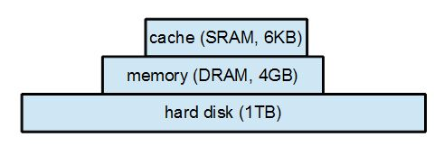
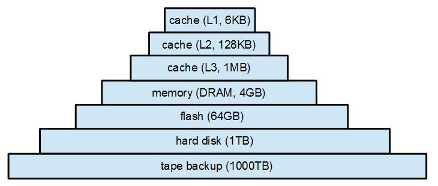

記憶體階層 (Memory Hierarchy)

圖、常見的三層式記憶體階層
在上圖中，cache 是直接封裝在 CPU 內部的靜態記憶體，其運作速度與 CPU 的內部電路一樣快，因此可以在 1 個 Clock Cycle 之內完成存取。
而身為主記憶體的 DRAM，速度比靜態記憶體慢上數十倍，因此必須耗費幾十個 Cycle 才能完成存取。
最下層的「硬碟」 (hard disk) 速度更慢，由於依賴讀寫頭與硬盤轉動的機械性動作，因此又比 DRAM 慢上數百倍 (雖然轉到了之後讀取還算快速，但是仍然相對緩慢，而且每次必須讀一大塊，否則轉了好久才讀 1 個 byte 將會慢如蝸牛)。
當然、有些電腦包含更多種類的記憶單元，這些記憶裝置的速度與容量不一，以下是一個更多層次的記憶階層範例。

圖、更多層次的記憶體階層
為了要讓電腦能夠又快又大，「高階處理器」通常採用了「快取」(cache) 與「記憶體管理單元」(MMU) 等兩個技術，其中的 cache 位於 CPU 內部，用來儲存常用的「指令與資料」，而 MMU 則是利用「分段或分頁」等機制，讓記憶體管理更有效率，甚至可以用「虛擬記憶體」技術把「硬碟」拿來當「備援記憶體」使用，讓容量可以進一步提升。
當然、要使用這些「快取」與「暫存」技術，都必須付出相對應的代價，那就是讓你的 CPU 設計更加複雜，而且有時也會「快不起來」。
(套句俗話說，出來混的，總有一天是要還的，CPU 的設計也是如此)